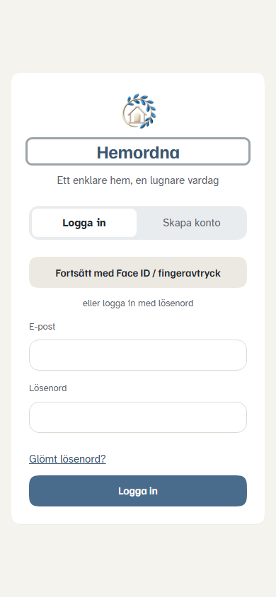
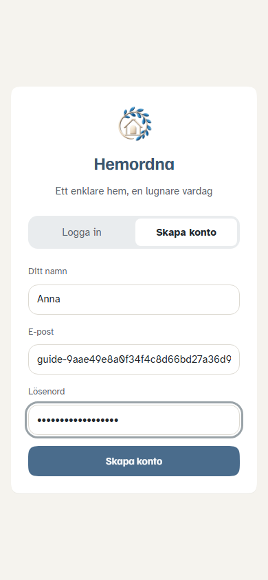
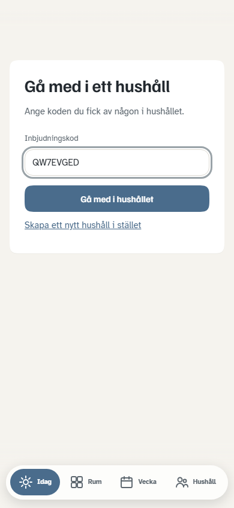
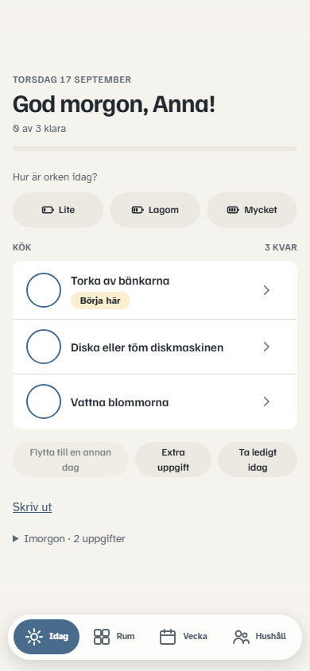
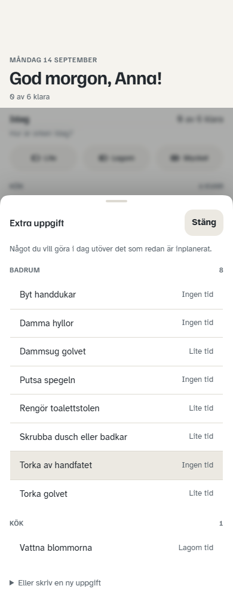
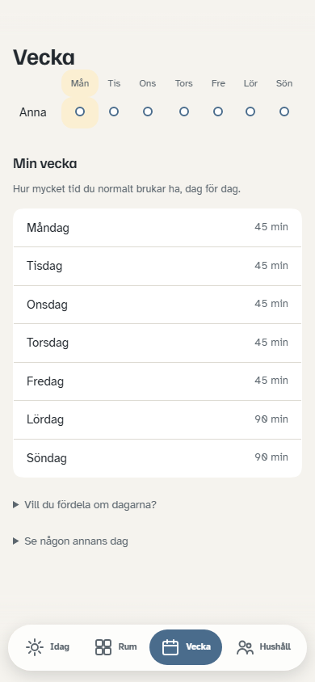
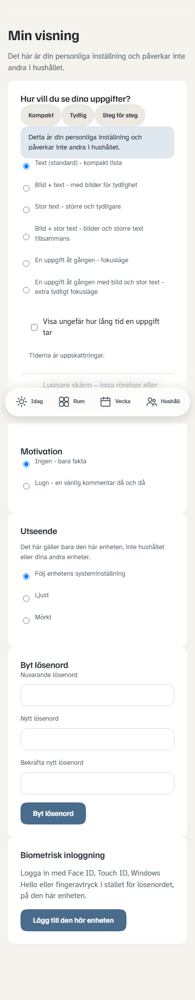
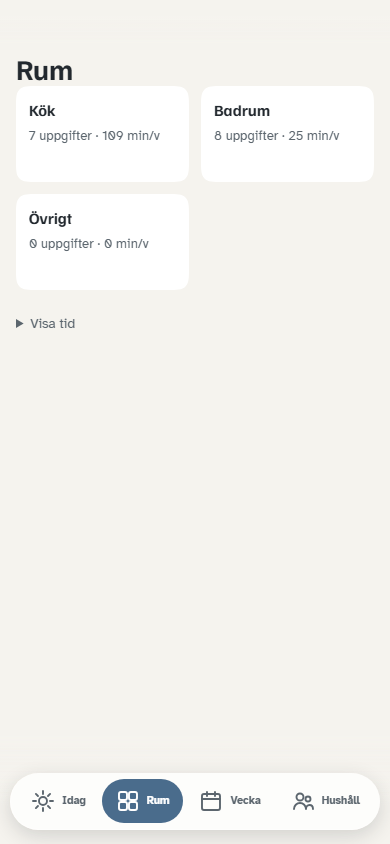
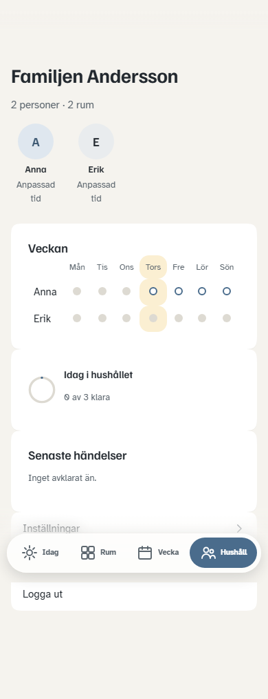

<!DOCTYPE html>
<html lang="sv">
<head>
    <meta charset="utf-8" />
    <meta name="viewport" content="width=device-width, initial-scale=1" />
    <title>För alla i familjen – Hemordna</title>
    <link rel="icon" href="../../favicon.png" />
    <link rel="stylesheet" href="../assets/guide.css" />
</head>
<body>
<script>
window.GUIDE = {
    title: "För alla i familjen",
    subtitle: "Användarguide",
    intro: "Allt du behöver för att använda Hemordna varje dag. Bilderna är riktiga skärmbilder "
        + "ur appen, tagna på en telefon.",
    fakta: ["6 kapitel", "Tagna på 390 × 844", "Uppdaterad 17 september 2026"],
    sections: [
        {
            id: "kom-igang",
            t: "Kom igång",
            html:
                "<p>Någon i familjen skapar hushållet. Du som ska gå med får en kod av dem – du "
                + "behöver aldrig börja om från början eller bygga upp något eget.</p>"

                + "<ol class='gor'>"
                + "  <li>Öppna appen och välj <span class='ui'>Skapa konto</span>.</li>"
                + "  <li>Fyll i namn, e-post och lösenord. Namnet är det familjen ser.</li>"
                + "  <li>Välj <span class='ui'>Har du en inbjudningskod?</span> och skriv in koden.</li>"
                + "  <li>Tryck <span class='ui'>Gå med i hushållet</span>.</li>"
                + "</ol>"

                + "<div class='shots'>"
                + "  <figure><div class='telefon'></div>"
                + "    <figcaption><b>Logga in</b> – har du redan ett konto loggar du in här.</figcaption></figure>"
                + "  <figure><div class='telefon'></div>"
                + "    <figcaption><b>Skapa konto</b> – namnet visas för resten av familjen.</figcaption></figure>"
                + "  <figure><div class='telefon'></div>"
                + "    <figcaption><b>Gå med</b> – koden får du av den som skapat hushållet.</figcaption></figure>"
                + "</div>"

                + "<div class='notis tips'><strong>Är det du som startar?</strong> Hoppa över koden "
                + "och döp hushållet i stället. Då blir du också den som sköter uppsättningen – se "
                + "<a href='hushallsansvarig.html'>guiden för dig som sköter hushållet</a>.</div>"
        },
        {
            id: "idag",
            t: "Din dag",
            html:
                "<p><span class='ui'>Idag</span> är skärmen du öppnar varje dag. Den visar bara "
                + "det som är ditt, idag – aldrig hela familjens lista, och aldrig vad någon annan "
                + "har kvar.</p>"

                + "<div class='shots'>"
                + "  <figure><div class='telefon'></div>"
                + "    <figcaption><b>Idag</b> – dina rutiner överst, sedan resten grupperat per rum.</figcaption></figure>"
                + "</div>"

                + "<div class='notis'><p><strong>Rutiner</strong> – de korta dagliga sysslorna, som att "
                + "bädda sängen eller vädra – står alltid överst, oavsett rum. De ska aldrig kunna "
                + "knuffas undan av en tyngre uppgift.</p></div>"

                + "<h3>Så här gör du</h3>"
                + "<ol class='gor'>"
                + "  <li>Tryck på ringen till vänster för att bocka av något som är klart.</li>"
                + "  <li>Ändrar du dig finns <span class='ui'>Ångra</span> kvar en stund efteråt.</li>"
                + "  <li>Tryck på pilen till höger för att skjuta upp, få uppgiften uppläst, eller "
                + "      säga att du börjar nu.</li>"
                + "  <li>Svara på <span class='ui'>Hur är orken idag?</span> – <span class='ui'>Lite</span>, "
                + "      <span class='ui'>Lagom</span> eller <span class='ui'>Mycket</span>.</li>"
                + "</ol>"

                + "<div class='notis'><p><strong>Orken styr både mängd och tyngd.</strong> Väljer du "
                + "<span class='ui'>Lite</span> får du mindre tid idag, och bara lätta uppgifter – de "
                + "tyngre väntar till en annan dag, utan påminnelse om att du hoppade över dem. Dina "
                + "vanliga rutiner (som att bädda sängen) står alltid kvar, oavsett vad du svarar. "
                + "<span class='ui'>Lagom</span> och <span class='ui'>Mycket</span> ger tillbaka den "
                + "vanliga tiden och lägger inget tyngdfilter alls.</p></div>"

                + "<div class='notis tips'><strong>Har du tid över?</strong> Väljer du "
                + "<span class='ui'>Mycket</span> och det blir tid kvar när dagens uppgifter är "
                + "planerade, föreslår Hemordna några av morgondagens uppgifter som ryms i den tiden. "
                + "Det är bara ett förslag – ingenting hämtas hit av sig självt. Vill du göra en av dem "
                + "nu i stället väljer du det själv.</div>"

                + "<div class='notis'><p><strong>Står det <em>sedan tidigare</em>?</strong> Det är en "
                + "uppgift från en tidigare dag som ligger kvar hos dig. Den är inte en tillsägelse – "
                + "den ligger bara kvar tills den blir gjord eller uppskjuten.</p></div>"
        },
        {
            id: "extra",
            t: "Extra uppgift",
            html:
                "<p>Något dök upp som inte fanns i planen? Lägg till det direkt på din egen dag. "
                + "Det ändrar ingenting för resten av familjen.</p>"

                + "<div class='shots'>"
                + "  <figure><div class='telefon'></div>"
                + "    <figcaption><b>Extra uppgift</b> – välj något som redan finns, eller skriv en ny.</figcaption></figure>"
                + "</div>"

                + "<div class='notis tips'><strong>Alla kan lägga till en extra uppgift</strong> – även "
                + "du som inte får ändra hushållets rum och uppgifter. Den hamnar bara på din egen dag.</div>"
        },
        {
            id: "vecka",
            t: "Veckan",
            html:
                "<p>En lugn överblick över din egen vecka. Bra för att se vilka dagar som är "
                + "tyngre – och för att markera en ledig dag i förväg, så inget planeras in då.</p>"

                + "<div class='shots'>"
                + "  <figure><div class='telefon'></div>"
                + "    <figcaption><b>Min vecka</b> – dag för dag, bara dina egna uppgifter.</figcaption></figure>"
                + "</div>"

                + "<div class='notis'><p><strong>Ledig dag</strong> markerar du i förväg. Appen planerar "
                + "då inget åt dig den dagen, i stället för att lägga på dig en skuld att ta igen.</p></div>"
        },
        {
            id: "min-visning",
            t: "Min visning",
            html:
                "<p>Du bestämmer själv hur appen ska se ut. Ditt val påverkar ingen annan, och "
                + "ingen annan ser vad du valt.</p>"

                + "<div class='shots'>"
                + "  <figure><div class='telefon'></div>"
                + "    <figcaption><b>Min visning</b> – snabbval överst, detaljerna under.</figcaption></figure>"
                + "</div>"

                + "<ol class='gor'>"
                + "  <li>Gå till <span class='ui'>Hushåll</span> och sedan <span class='ui'>Inställningar</span>.</li>"
                + "  <li>Välj ett snabbval: <span class='ui'>Kompakt</span>, <span class='ui'>Tydlig</span> "
                + "      eller <span class='ui'>Steg för steg</span>.</li>"
                + "  <li>Eller ställ in varje del för sig – bilder, textstorlek, fokusläge, om tiden "
                + "      ska visas, och hur mycket uppmuntran du vill ha.</li>"
                + "  <li><span class='ui'>Utseende</span> och <span class='ui'>Lugnare skärm</span> gäller "
                + "      bara den här telefonen.</li>"
                + "</ol>"

                + "<div class='notis tips'><strong>Ett hushåll är normalt blandat.</strong> En i familjen "
                + "kan köra <span class='ui'>Steg för steg</span> med stor text medan en annan har den "
                + "kompakta listan. Det är meningen – inte ett specialfall.</div>"
        },
        {
            id: "andra",
            t: "Vad du kan ändra",
            html:
                "<p>Alla gör sina egna uppgifter. Men hemmets uppsättning – vilka rum som finns, "
                + "vilka sysslor som hör till dem och vem som är med – sköts av en eller några få "
                + "i familjen. Det är därför vissa knappar inte syns för dig.</p>"

                + "<table>"
                + "<thead><tr><th>Det här</th><th>Kan du</th></tr></thead>"
                + "<tbody>"
                + "<tr><td>Bocka av, ångra, skjuta upp</td><td class='ja'>Ja</td></tr>"
                + "<tr><td>Lägga till en extra uppgift på din dag</td><td class='ja'>Ja</td></tr>"
                + "<tr><td>Din visning och lediga dagar</td><td class='ja'>Ja</td></tr>"
                + "<tr><td>Hur mycket du orkar, per veckodag</td><td class='ja'>Ja</td></tr>"
                + "<tr><td>Pausa dig själv när du reser bort</td><td class='ja'>Ja</td></tr>"
                + "<tr><td>Lägga till eller ta bort rum</td><td class='nej'>Nej</td></tr>"
                + "<tr><td>Ändra uppgifter och hur ofta de återkommer</td><td class='nej'>Nej</td></tr>"
                + "<tr><td>Bjuda in eller ta bort medlemmar</td><td class='nej'>Nej</td></tr>"
                + "</tbody></table>"

                + "<div class='notis tips'><strong>Din egen ork sätter du själv.</strong> Öppna ditt "
                + "kort under <span class='ui'>Hushåll</span> och välj <span class='ui'>Hur mycket "
                + "orkar personen per veckodag</span> – en nivå per dag, ingen kryssruta behövs. En "
                + "vardagskväll kanske bara lätta sysslor känns rimliga, helgen kan bära mer.</div>"

                + "<p>Knappar du inte kan använda visas inte alls – de är aldrig gråa eller låsta. "
                + "Appen ställer helt enkelt inte frågan.</p>"

                + "<div class='shots'>"
                + "  <figure><div class='telefon'></div>"
                + "    <figcaption><b>Rum</b> – du ser rummen och deras uppgifter, men ingen ruta för att lägga till.</figcaption></figure>"
                + "  <figure><div class='telefon'></div>"
                + "    <figcaption><b>Hushåll</b> – familjen och veckan syns, men inte inställningarna för hemmet.</figcaption></figure>"
                + "</div>"

                + "<div class='notis tips'><strong>Behöver du kunna ändra?</strong> Fråga den som "
                + "startade hushållet. Det är en kryssruta i ditt kort under <span class='ui'>Hushåll</span>, "
                + "och tar två sekunder att sätta.</div>"
        }
    ],
    footer: "<p>Guide för Hemordna. Skärmbilderna tas automatiskt mot appen på 390 × 844 och kan "
        + "tas om när gränssnittet ändras – se <code>GuideSkarmbilderTests</code>.</p>"
        + "<p><a href='hushallsansvarig.html'>För dig som sköter hushållet →</a></p>"
};
</script>
<script src="../assets/guide.js"></script>
</body>
</html>
